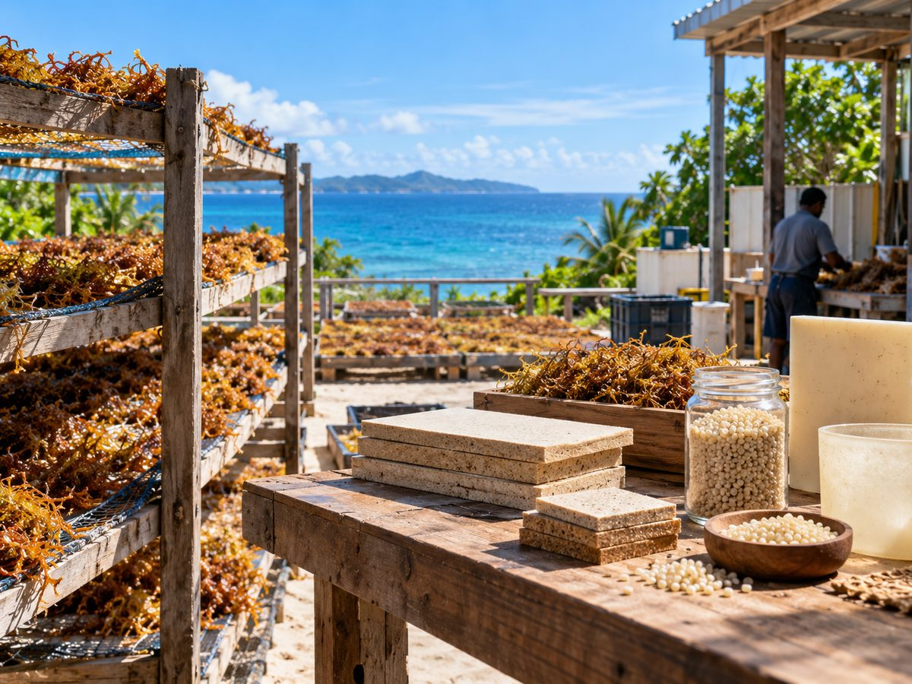
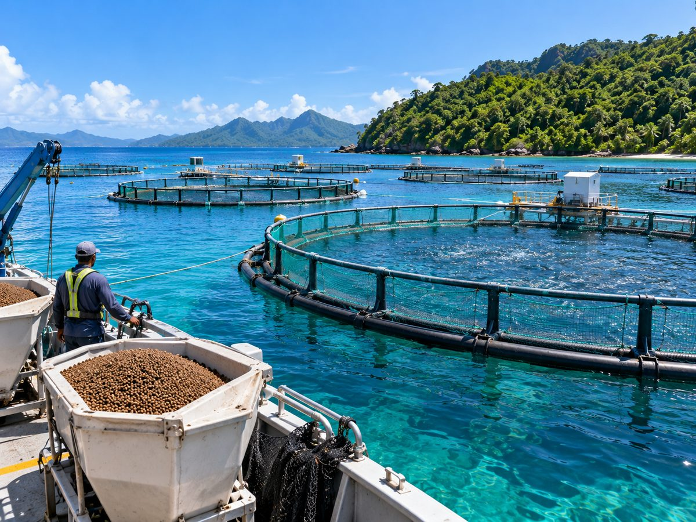
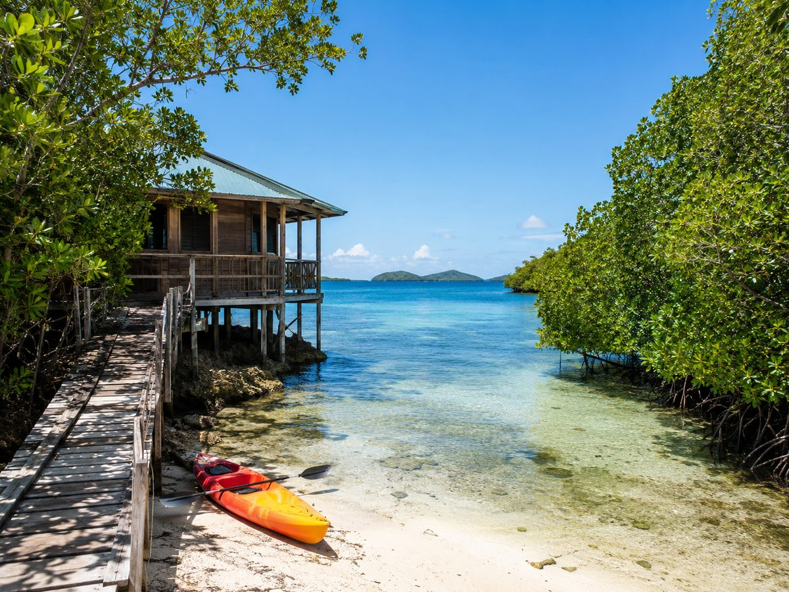
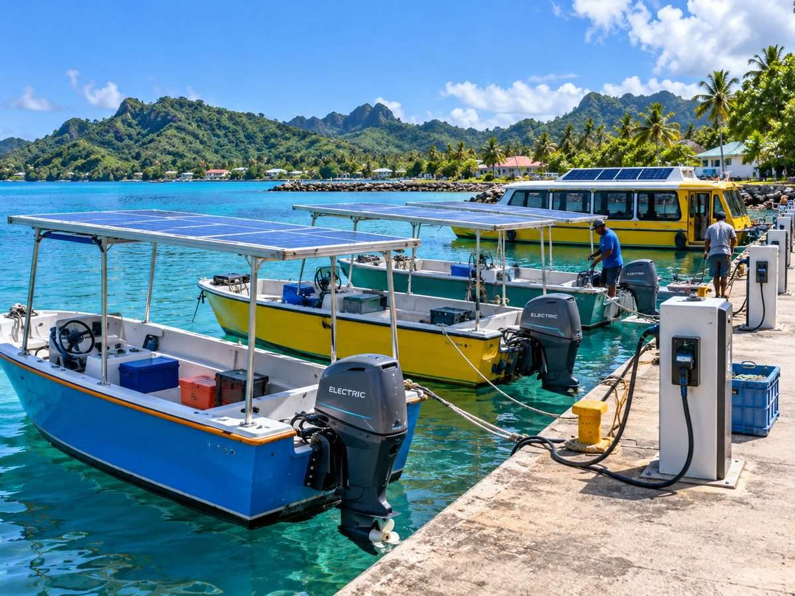
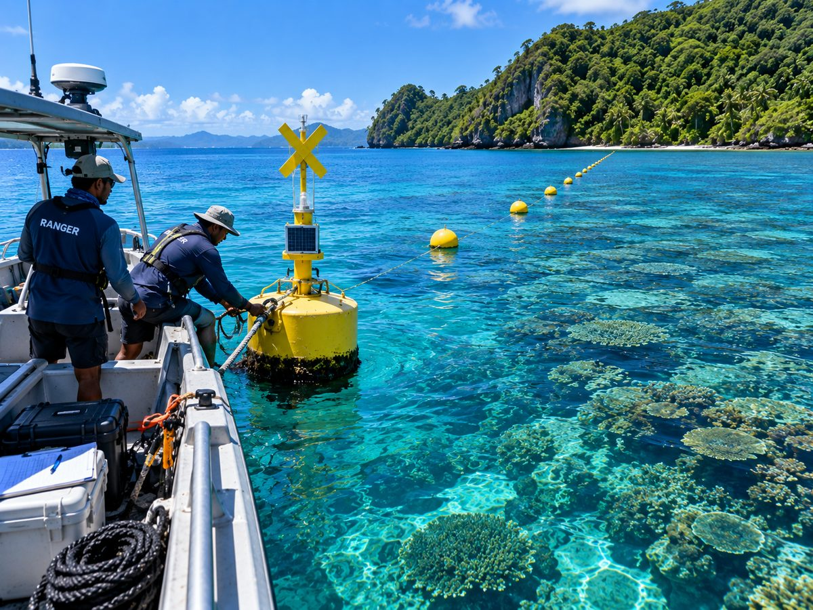
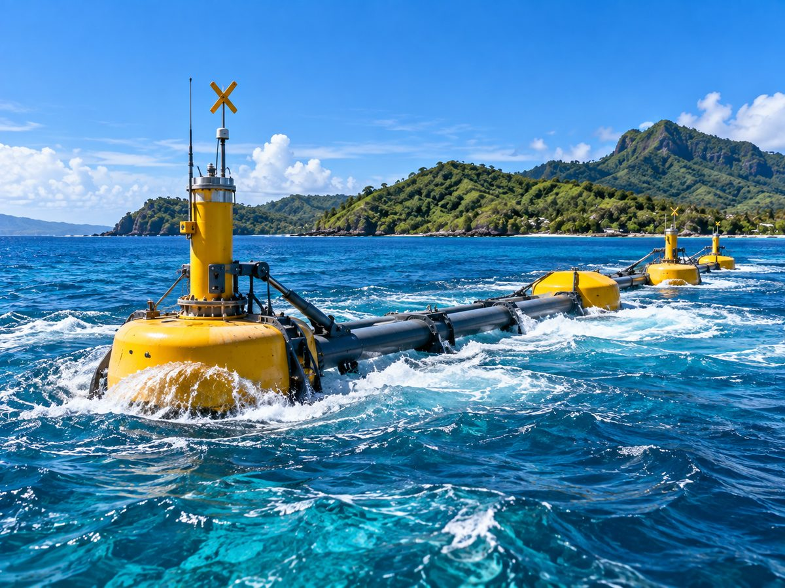
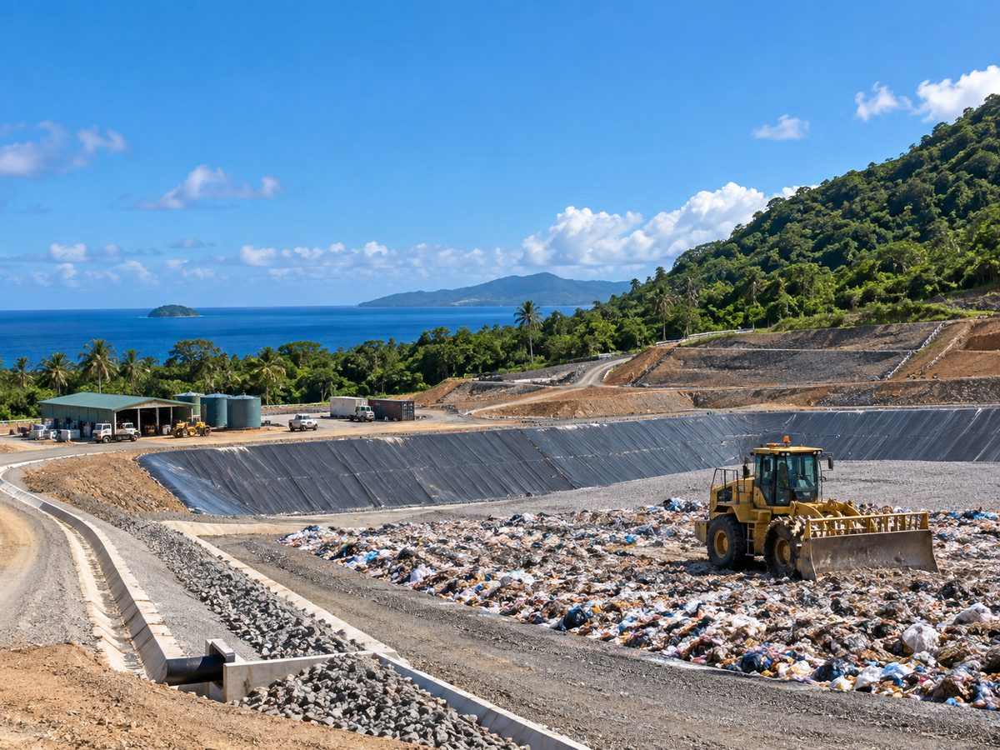
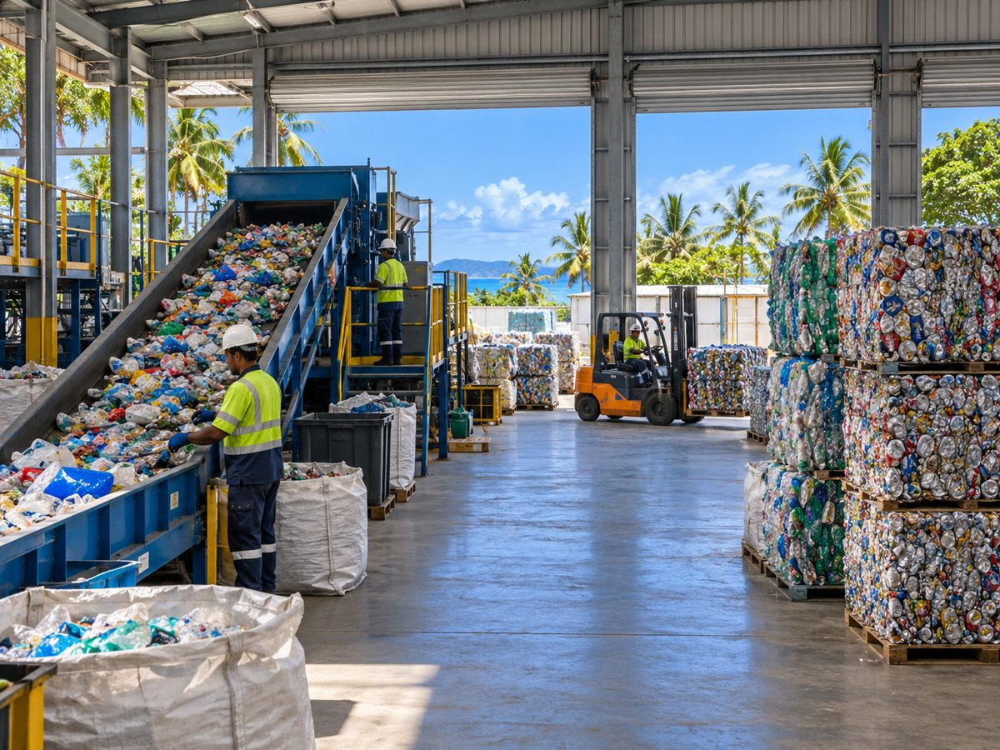
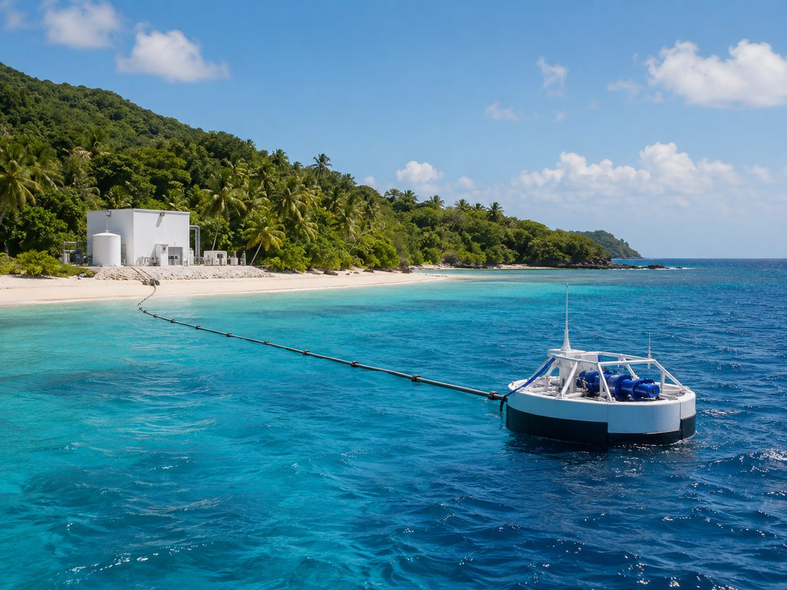

What we invest in
Six sectors of the island blue economy
These are the sectors island economies most depend on, and the ones where environmental and economic resilience turn out to be the same problem. What follows is what is financed within each, rather than what it achieves.
-
Sustainable blue infrastructure
Port and terminal upgrades, vessel replacement and retrofit, cold storage and landside logistics, and the electrification of port operations. Revenue typically comes from throughput and berthing fees, charter and lease income, and long-term concession or service agreements with public counterparties.
Floods and storms are estimated to cost these states US$56 billion in loss and damage under a 2°C scenario by 2050. Natural defences are part of the answer and are cheap by comparison: mangroves reduce wave height and flood depth, and every dollar spent conserving them is estimated to return three in benefits.
Market. The marine electric vehicle sector was valued at US$11.12 billion in 2024 and is projected to reach US$38.65 billion by 2032, a compound annual growth rate of 16.9% (Consegic Business Intelligence, 2025). In these states the demand drivers are specific: dependence on imported fuel, diesel restrictions in marine parks, and national electrification targets.
-
Circular economy and blue technology
Materials recovery and recycling, waste-to-value processing, reverse logistics for imported packaging, and the technology and data services that make recovery viable at small-market volumes. Revenue from gate fees, recovered commodity sales, and municipal or commercial service contracts.
Island states import the plastic they use and have little capacity to dispose of it, so on average 15% of waste is burned or discarded into the environment. Marine plastic pollution has risen tenfold since 1980. Recovery is not only an environmental measure here; it substitutes for imports and for landfill neither of which the islands can expand.
Market. Global plastic recycling was estimated at US$40 billion in 2021 and is expected to reach US$78 billion by 2031, a compound annual growth rate of 7% (Statista Research Department, 2025). Island states generate 48% more waste per head than the global average with limited means of disposing of it (UN Environment, 2019).
-
Ridge to reef
Water treatment and distribution, wastewater collection and treatment, desalination, and sludge and effluent management, together with the catchment works upstream that determine whether any of it holds. Generally contracted with utilities, municipalities or large private users on long-term service agreements.
What happens on land determines the state of the reef. Nutrient run-off drives the algal blooms that damage fisheries and tourism, and Caribbean states have had sargassum land at up to 100 tonnes per kilometre of beach per day. Some of these states import as much as 80% of their food, so agriculture that works is also an import substitution.
Market. Global water and waste treatment is forecast to grow at a compound annual rate of 7.3% between 2023 and 2030 (Global Market Insights, 2023). Only 32% of island inhabitants are connected to wastewater treatment, so the environmental need and the commercial one are the same need (UN Environment, 2019).
-
Ocean-based renewable energy
Distributed solar and storage, hybrid systems that displace diesel generation, marine and ocean energy where the resource supports it, grid stabilisation, and the electrification of vessels and port equipment. Revenue from power purchase agreements and from avoided fuel cost, which in these markets is substantial.
Electricity in these states costs between US$0.30 and more than US$1.00 per kilowatt hour, against roughly US$0.20 in the United Kingdom in the same year, because most of it is generated from imported diesel. Cabo Verde now meets 22% of energy use from renewables, and the African Development Bank found the shift stimulated growth by cutting import costs.
Market. These states would save around US$3.3 billion a year by switching to renewable generation, equivalent to 3.3% of their combined GDP (UNDP, 2025). Most receive between 5 and 7 kilowatt hours per square metre per day of solar irradiance, yet solar accounts for only about 7 to 10% of installed capacity in each region (ESMAP, 2020).
-
Sustainable seafood
Capture fisheries and aquaculture production, hatchery and feed, cold chain and processing, traceability and market access technology, and the enabling infrastructure, landing sites, ice, storage, without which none of the rest functions. Value is usually created in the processing and the route to market rather than at the point of harvest.
Catch in the tropics, where most of these states lie, is predicted to fall by up to 40% by 2050. Fish provides between 50% and 90% of animal protein in Pacific coastal communities, so the decline is a food security problem before it is a commercial one. Aquaculture is where the headroom is: these states hold 0.67% of the world’s inland water surface and produce 0.07% of its inland aquaculture.
Market. Global aquaculture is expected to exceed US$260 billion by 2026, growing at 3.6% a year from 2020 (Shahbandeh, 2025), and Caribbean and Pacific states have targeted increases of 30% (World Bank, 2017). Fisheries generate up to 12% of GDP in some of these states (UNEA, 2024); Pacific island seafood exports reached 530,000 tonnes and US$1.2 billion in 2019 (Field, 2021).
-
Ocean conservation and ecotourism
Managed access and concession models, dive and marine tourism operators, and restoration work carrying a contracted revenue line, where reef or mangrove works are procured by government, insurers or hotels rather than funded by grant. Conservation that has a business model, in other words, rather than a subsidy.
Five of the world’s thirty-six biodiversity hotspots sit within these states, and for some of them more than half of GDP comes from fisheries and tourism. The asset and the economy are the same thing, which is what makes conservation financeable here rather than philanthropic.
Market. Travel and tourism contributed US$10.9 trillion to the global economy in 2024 and is expected to reach US$16.5 trillion by 2035 (WTTC, 2025). In these states it is worth approximately US$30 billion a year (UN, 2021), almost all of it dependent on the condition of the reef and the coast.
Sector context: Outrigger Impact Strategy, citing Cheung et al. (catch decline), IRENA 2017 (electricity prices), FAO 2014 and 2020 (protein, aquaculture), UNEP (waste), the Mangrove Breakthrough Report (mangrove returns) and the African Development Bank (Cabo Verde). Market sizing is attributed in each line above; forecasts are projections, not results.
Four investment models
Built to be repeated
A single investment in a single island rarely justifies the cost of making it. Outrigger builds to four models instead, each chosen because it can be done more than once: the second version of a deal costs a fraction of the first, and it is that repeatability, rather than the size of any one transaction, that makes the geography workable.
Conservation that pays for itself
Investment into ocean conservation structured so that it is economically sustainable rather than dependent on renewed grant funding. Where the protection of a reef, a mangrove belt or a fishery carries a contracted revenue line, it can be financed; where it does not, it cannot, and belongs with the grant facility instead.
Island joint ventures
Proven blue economy business models and technologies brought into island markets through a jointly owned local vehicle. The operator supplies the technology and the track record, the island partner supplies the market access and the licence to operate, and the structure keeps the value and the employment on the island.
Direct investment in growing businesses
Growth capital into small and medium-sized enterprises that already trade and are constrained by capital rather than by demand. These are the most conventional investments the fund makes, and the ones where the constraint is simply that nobody of the right size is lending or investing.
Project finance for environmental infrastructure
Focused financing for the infrastructure that environmental outcomes depend on: waste and water treatment, landfill, port and energy assets. Long-dated, contracted with public or utility counterparties, and the part of the portfolio that most resembles conventional infrastructure lending.
How we invest
Instruments matched to the business
Island businesses vary widely in maturity, cash generation and the kind of capital they can carry. Outrigger invests across the capital structure so that the instrument follows the business rather than the other way round.
Equity
Growth capital for businesses that need balance sheet rather than debt service, and where ownership is the appropriate way to carry early operating risk.
Private credit
Lending to businesses with established cash flow, including asset-backed and receivables structures, where debt is cheaper for the company than giving up equity.
Blended structures
Public and philanthropic capital used alongside private capital where the risk profile genuinely requires it, to make an otherwise sound business financeable rather than to subsidise a weak one.
How opportunities are selected
Five tests, applied in this order
The order matters. A project that fails the first test is not rescued by performing well on the others.
-
Commercial viability
There is a business here that can pay for itself: identifiable customers, a defensible margin, and a route to market that does not depend on permanent concessional support.
-
Structural need
It addresses a constraint the economy actually has, rather than importing a solution that works elsewhere. Waste recovery matters where disposal capacity is genuinely absent, not where it merely sounds progressive.
-
Island relevance
It works at island scale and in island conditions: small volumes, long supply lines, limited technical labour, exposure to storms. A model that only works above a certain population is not an island model.
-
Measurable impact
The environmental or social outcome can be stated as an indicator, baselined and reported against, rather than asserted. How that is done is set out in the impact framework.
-
Scalability
It can grow within a state, and ideally be repeated across others. Linking comparable businesses across the regions is how individually small opportunities reach a size that institutional capital can reach.
What the pipeline looks like
Nine kinds of project
The opportunities Outrigger is currently assessing fall into nine types. They are shown here by kind and by the instrument each would take.

Alternative materials
Debt or equity

Aquaculture
Equity

Ecotourism
Equity

Fleet electrification
Equity

Marine protected areas
Debt

Ocean energy production
Debt or equity

Sanitary landfill
Debt

Waste processing
Debt or equity

Wave-powered desalination
Equity
Where the pipeline comes from
Projects are prepared, not waited for
The most common reason a viable island business never reaches a term sheet is that the feasibility work, environmental studies, permitting and financial structuring were never funded. That work is too commercial for grant makers and too early for investors.
The Outrigger Technical Assistance Facility exists to close that gap. It makes grants to projects at the stage before they are investable, so that a pipeline exists at all. A grant from the facility is not an investment, and is not a commitment by the fund to invest; projects may go on to seek investment, and any investment would be subject to due diligence and Investment Committee approval on the same terms as any other opportunity.
The vehicle
Outrigger Impact Fund I
The fund is how the strategy above is executed. Outrigger Impact Fund I is a blended finance vehicle providing equity and debt financing to blue economy businesses across Small Island Developing States. It reached first close on 28 July 2026 with cornerstone commitments from the Nordic Development Fund and the Luxembourg–European Investment Bank Climate Finance Platform, and is targeting a total size of US$100 million with a final close anticipated in 2027.
Information about the fund’s strategy, structure and terms is a financial promotion under the Financial Services and Markets Act 2000. It is not published on this website. Professional investors who would like to know more are welcome to get in touch, and materials are provided on request following the manager’s eligibility checks.